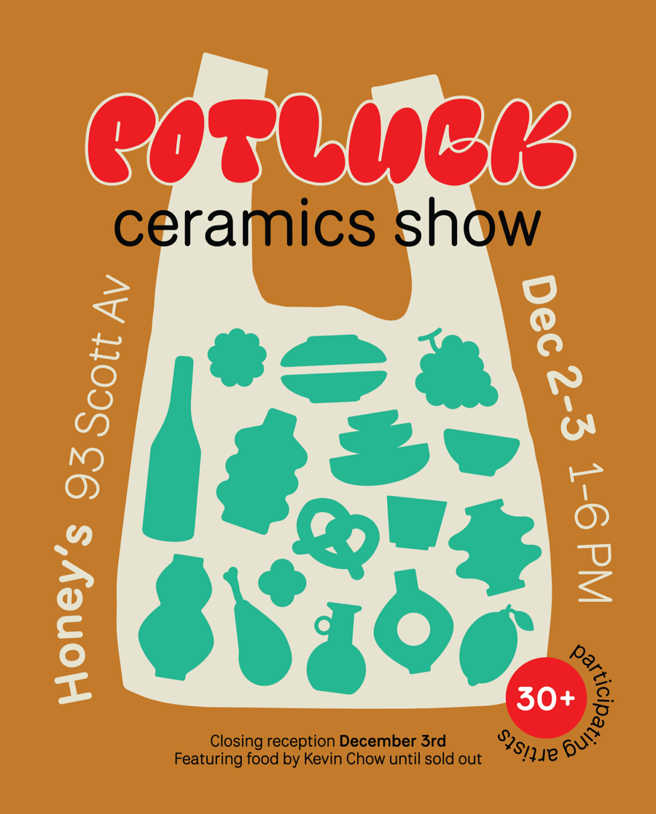
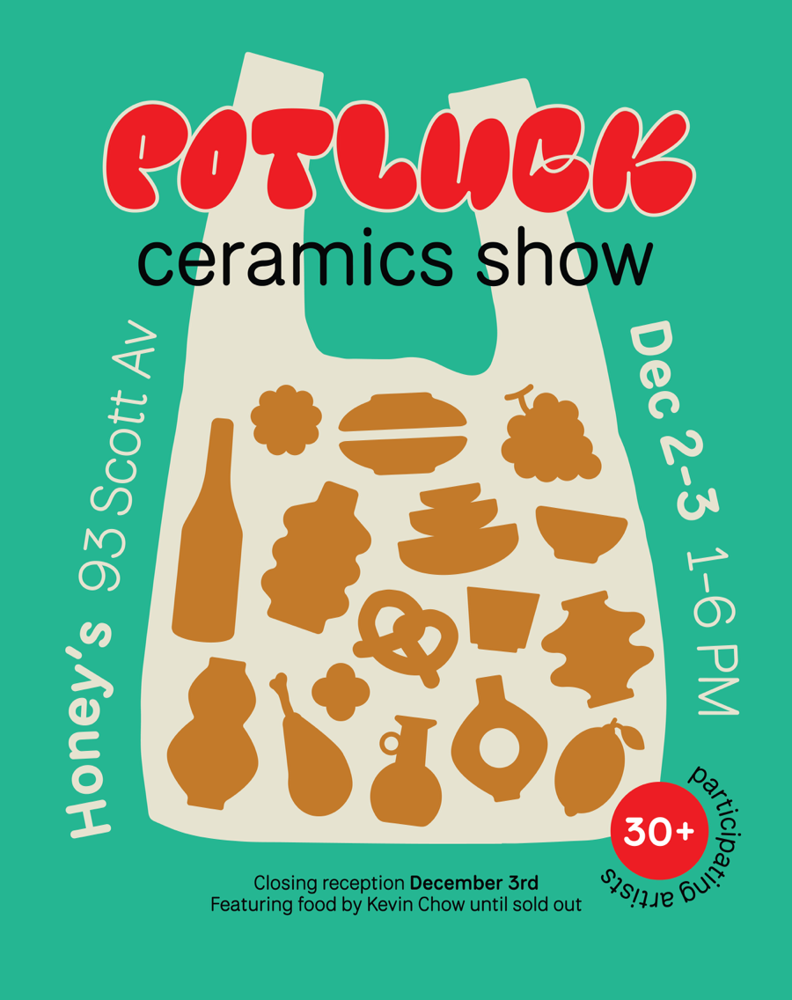
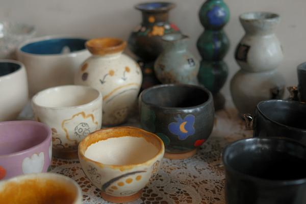
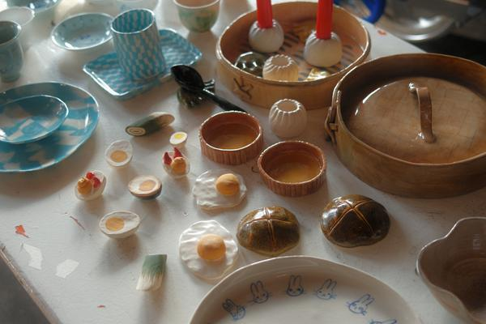
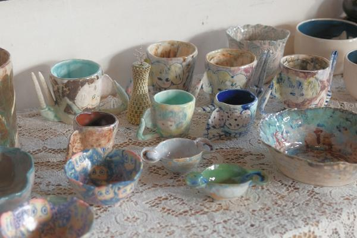

Organized by Camila Lim-Hing, Johnathan Huang, and Gu, "Potluck" showcased the functional wares of 30+ ceramic artists 12/2 - 12/3 2023 at Honeys in Brooklyn NY with food by chef Kevin Chow.
Potluck celebrated a blank canvas in which each artist was invited to add their own style.
Participating artists: Eun-ha Paek, Esther Yang, Meiasha Gray, Jessica Fisher, Moli Studio, Slug Home, Wren Mcdonald, Paul Rho, Bria Wallace, Claire Zuo, Monique Smith, Gabriela Forgo, Taylor Ward, Cheryl Chan, Yuye Zhou, Lina Ceramics, Joyce Lau, Kira Lauring, Jess Stolfa, Thom Colligan, Rose Wong, Carolyn Xu, Henry Wang, Julia Fernandez, Christian Moses, Pyper Bleu, Michelle Tarantelli, Esther Nam, Tree Frog Ceramics, Fyrouzi, Gu, Johnathan Huang, Camila Lim-Hing
Special thanks to the team at Honeys Brooklyn.
Photos by Johnathan Huang.




